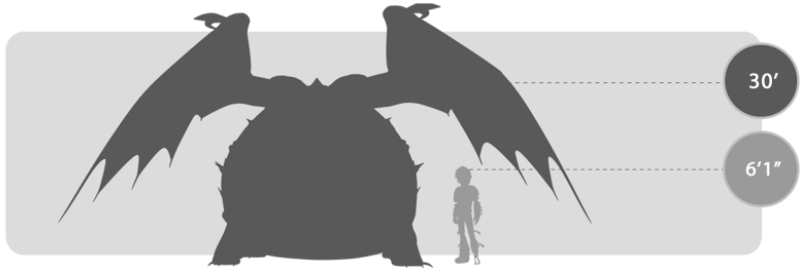
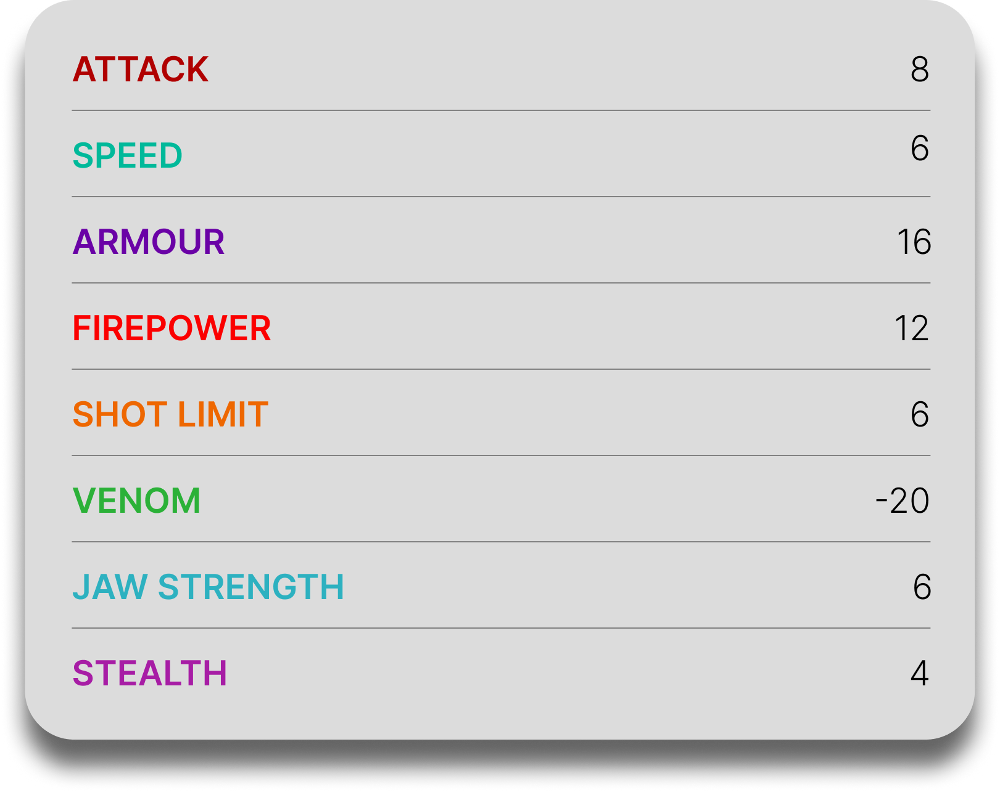

Buffalord
General Overview
The Buffalord is a medium-sized dragon belonging to the Mystery Class. Though hunted to near extinction, it is known as one of the most gentle dragons in the archipelago and is especially valued for its remarkably potent saliva, which can act as a cure when combined with certain herbs. Despite its calm and peaceful nature, the Buffalord can become a dangerous defender when separated from its food source or territory, using explosive fire, inflation, and sharp spines to keep threats away.


Physical Appearance
- Body & Color: It has a broad, heavy, armored body usually seen in shades of brown and red, though green, purple, white, and blue variations also exist.
- Head & Face: Its head resembles a turtle's, with side-curving ram-like horns and a single central horn on top of the skull.
- Appendages: It has four short, stout legs with flat-bottomed feet and a thick body built more for durability than speed.
- Wings & Tail: It has very large wings, a short stiff neck, and a tail lined with spikes that can be used defensively.
Abilities and Combat
- Explosive Fire: It ejects plumes of fire around itself, creating a wide burst of flames in its immediate vicinity.
- Inflation: It can inflate its body to twice its normal size, making itself more intimidating and strong enough to damage surrounding materials.
- Spine Shot: It can fire the sharp spines embedded in its hide as a defensive attack.
- Strength and Durability: It is strong enough to drag objects much larger than itself and tough enough to withstand its own fiery blasts.
- Curative Saliva: When mixed with certain herbs, its saliva can create a remedy powerful enough to cure the Scourge of Odin.
- Territorial Defense: When removed from its food source or homeland, it becomes highly aggressive and uses all of its abilities to force its way ◄ BACK.
Behavior and Personality
- Intelligence: It is calm, perceptive, and easy to handle within familiar territory, though it reacts strongly when its routine is disturbed.
- Temperament: Buffalords are extremely docile and peaceful by nature, often compared to yaks because of their gentle behavior.
- Behavior: They spend most of their lives grazing quietly in plains and grasslands rich in herbs.
- Social Traits: They once lived in large herds, but now are rare and usually live solitary lives.
- Diet: Their diet consists of flowers, grass, herbs, lichen, and moss.